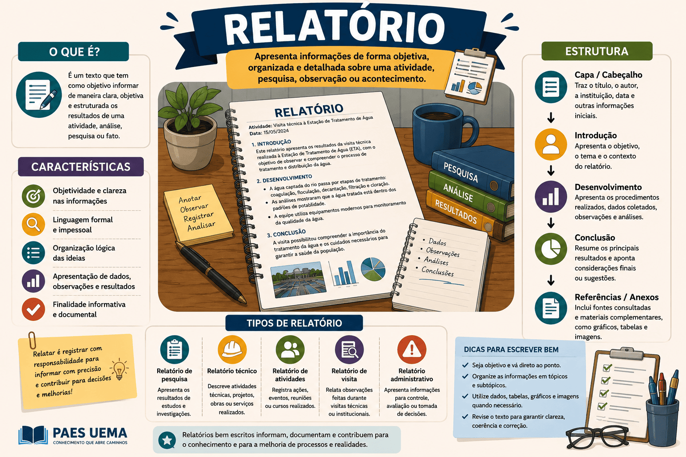

Relatório: O que é, Características, Tipos e Como Fazer
Se você está no ensino médio, na universidade ou já ingressou no mercado de trabalho, com certeza já teve (ou terá) que escrever um relatório. Seja para registrar o que aconteceu em uma feira de ciências, descrever os resultados de uma pesquisa acadêmica ou apresentar o balanço mensal de uma empresa, esse gênero textual é indispensável.
O relatório é um dos gêneros mais frequentes na vida estudantil e profissional. Ele tem a missão de expor, descrever e, muitas vezes, analisar os passos e os resultados de uma atividade prática ou teórica. Diferente de um texto puramente opinativo, o relatório exige comprovação, método e muita objetividade.
Em vestibulares que cobram redações de diferentes gêneros (como Unicamp, UEMA, UEL e UFPR), o candidato pode ser desafiado a assumir a voz de um pesquisador ou funcionário para elaborar um relatório sobre um problema apresentado na coletânea.
Neste conteúdo, você vai aprender o que é o relatório, quais as suas principais características linguísticas, as diferenças entre relatórios escolares, acadêmicos e técnicos, e qual é a estrutura passo a passo para não errar na elaboração.

O que é o relatório?
O relatório é um gênero textual de tipologia predominantemente expositivo-descritiva (e, às vezes, argumentativa), cuja finalidade é relatar e registrar as etapas, os métodos e os resultados de uma atividade, evento, pesquisa ou projeto. Ele serve para informar a um superior (um professor, um chefe ou um orientador) sobre o andamento e a conclusão de um trabalho.
Relatório é um documento informativo e descritivo que apresenta, de forma organizada e sequencial, os dados e resultados de uma experiência prática, pesquisa acadêmica ou rotina corporativa, com o objetivo de prestar contas ou registrar o conhecimento adquirido.
Quais são as principais características do relatório?
Por ser um documento formal que será avaliado por terceiros, o relatório exige um rigor estético e linguístico específico:
Marcas linguísticas e estruturais
- Objetividade e Clareza: O texto deve ir direto ao ponto. Utiliza-se a linguagem denotativa (sentido literal) para evitar duplas interpretações.
- Impessoalidade (Uso da 1ª do plural ou 3ª do singular): É comum escrever relatórios na 3ª pessoa ("Notou-se que...") ou na 1ª pessoa do plural ("Observamos que..."), mesmo que feito individualmente, para conferir um tom mais científico e menos emocional do que a 1ª pessoa do singular ("Eu vi").
- Caráter Sequencial: Os fatos são narrados/descritos em ordem cronológica ou lógica (antes, durante e depois do experimento/evento).
- Formalidade: Uso rigoroso da norma-padrão da língua portuguesa, frequentemente acompanhada de vocabulário técnico da área em questão (Biologia, Administração, Química, etc.).
Relatório não é Diário!
Um erro muito comum é transformar o relatório em um desabafo emocional. Evite frases como "Achei a experiência maravilhosa, me diverti muito". O foco deve ser nos fatos concretos e no aprendizado técnico (ex: "A experiência demonstrou a eficácia do método X").
Tipos de Relatório
O formato e o rigor mudam conforme o contexto em que o documento é produzido. Os mais cobrados e utilizados são:
Relatório Escolar (ou de Visita)
Mais simples. Feito após a visita a um museu, laboratório ou feira. O aluno relata o que viu, qual foi o roteiro e o que aprendeu. Exige clareza, mas tem uma estrutura mais enxuta (Introdução, Desenvolvimento e Conclusão).
Relatório Científico/Acadêmico
Altamente rigoroso. Segue as normas da ABNT. Relata pesquisas científicas ou práticas laboratoriais. Exige metodologia detalhada, revisão bibliográfica, apresentação de dados (gráficos/tabelas) e referências bibliográficas.
Qual é a estrutura passo a passo de um relatório?
Embora um relatório técnico da ABNT exija dezenas de páginas e formatações específicas, a estrutura base (para trabalhos escolares e provas de vestibular) segue o seguinte roteiro lógico:
| Parte | O que é e o que deve conter |
|---|---|
| 1. Cabeçalho / Título | Identificação da instituição, nome do autor, data, destinatário (ex: Ao Professor X) e um título claro (ex: Relatório da visita ao Museu Histórico). |
| 2. Introdução (O Quê e Por Quê) | Apresenta o objetivo da atividade, o local, o período e os envolvidos. O leitor precisa entender do que trata o relatório no primeiro parágrafo. |
| 3. Desenvolvimento (Como e Resultados) | É o coração do texto. Aqui, você descreve a metodologia (como foi feito) e aponta os dados observados. Relata problemas ocorridos e informações coletadas ao longo da atividade. |
| 4. Conclusão | Uma análise final sobre a experiência. Os objetivos iniciais foram atingidos? O que se conclui dos dados observados? Pode incluir sugestões de melhoria. |
| 5. Assinatura e Referências | Assinatura do autor (se for prova, lembre-se da máscara, não assine seu nome real!) e, se houver, indicação dos livros/sites pesquisados. |
Questão de aplicação
Questão: (Vestibular / Adaptada) Leia o fragmento textual produzido por um estudante universitário:
"O presente documento tem por objetivo registrar as atividades de coleta de amostras de água realizadas no Rio Anil, no dia 15 de agosto de 2026. A metodologia consistiu na divisão da turma em três grupos, que utilizaram frascos esterilizados para recolher o material às margens do rio. Observou-se que as amostras do ponto B apresentaram forte odor e coloração escura. Conclui-se, preliminarmente, que a alta concentração de dejetos urbanos impossibilita a oxigenação adequada do ecossistema estudado."
Considerando os elementos linguísticos e a organização das ideias, o fragmento classifica-se predominantemente como:
- Um diário pessoal, pois relata as atividades rotineiras da turma em um determinado dia.
- Uma carta argumentativa, pois o aluno está reclamando sobre a poluição do rio para uma autoridade.
- Um relatório técnico/acadêmico, evidenciado pela estrutura de introdução dos objetivos, detalhamento da metodologia (como foi feito) e conclusão baseada na observação dos fatos.
- Um artigo de opinião, já que o autor defende intensamente, na 1ª pessoa do singular, a proteção ambiental.
- Um texto injuntivo, uma vez que prescreve ordens de como a água do rio deve ser recolhida.
Resolução
A alternativa correta é a 3 — Um relatório técnico/acadêmico, evidenciado pela estrutura...
O texto traz a marcação clara do objetivo do trabalho, relata a ação ("metodologia consistiu em", "utilizaram frascos"), expõe os resultados observados e, no fim, traz uma análise racional conclusiva. Ele utiliza linguagem formal e 3ª pessoa ("Observou-se"), afastando-se da informalidade do diário, da argumentação da carta e não contendo comandos injuntivos.
Resumo: Como identificar e fazer o Relatório?
O relatório é a prestação de contas escrita sobre uma atividade ou projeto.
- Objetivo Maior: Expor o que foi feito, como foi feito e quais foram os resultados alcançados.
- Estilo: Objetivo, impessoal (foco no plural ou na voz passiva) e baseado em fatos concretos.
- Tipologia predominante: Expositivo-descritivo (informa e detalha a ocorrência).
- Estrutura fundamental: Apresentação (local, data, autores), Introdução (objetivo), Desenvolvimento (metodologia e observações) e Conclusão (análise dos dados).
Continue estudando Produção Textual
- Texto Descritivo: O que é, Características, Tipos e Exemplos
- Texto Informativo: O que é, Características, Estrutura e Exemplos
- Carta: O que é, Tipos, Estrutura e Dicas para Redação
- Como Fazer um Artigo de Opinião: estrutura, exemplos e passo a passo
- Gêneros discursivos: conceito, tipos e exemplos
- Produção Textual e Redação — página 1
- Produção Textual e Redação — página 2
Referências
MEDEIROS, João Bosco. Redação científica: a prática de fichamentos, resumos, resenhas. São Paulo: Atlas.
MARCONI, Marina de Andrade; LAKATOS, Eva Maria. Fundamentos de Metodologia Científica. São Paulo: Atlas.
Explore Outros Conteúdos
Continue seus estudos acessando outras seções do site Mestre Kira: